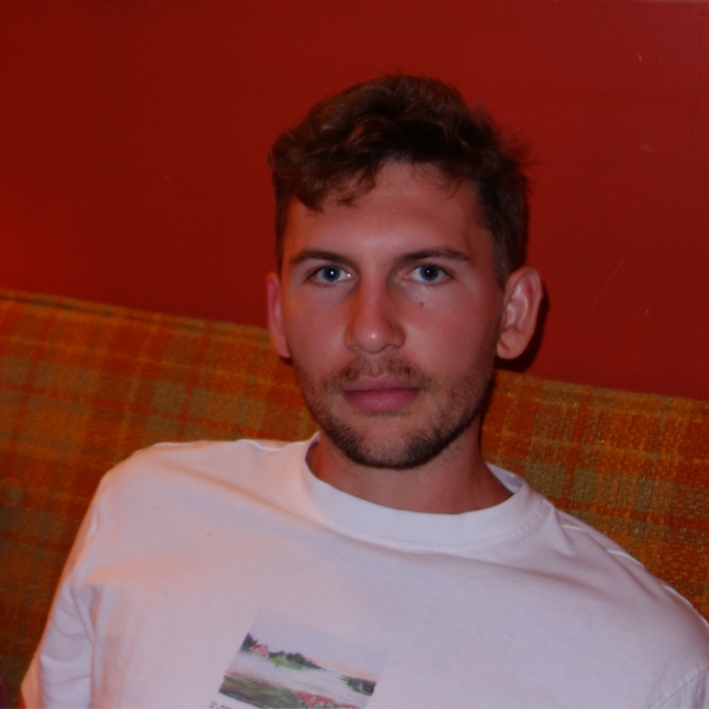
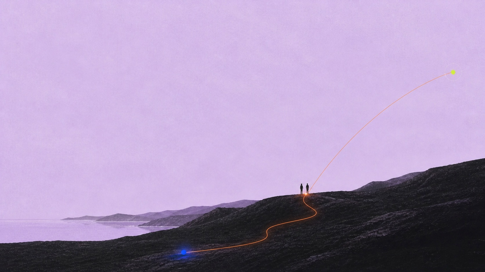
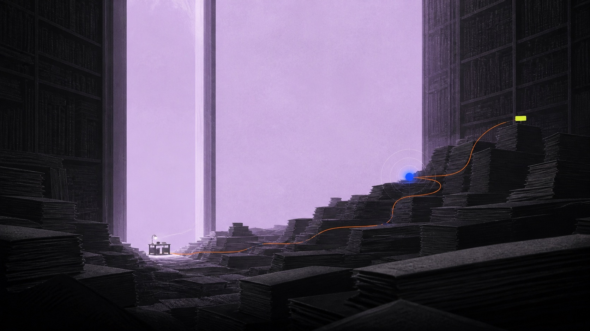
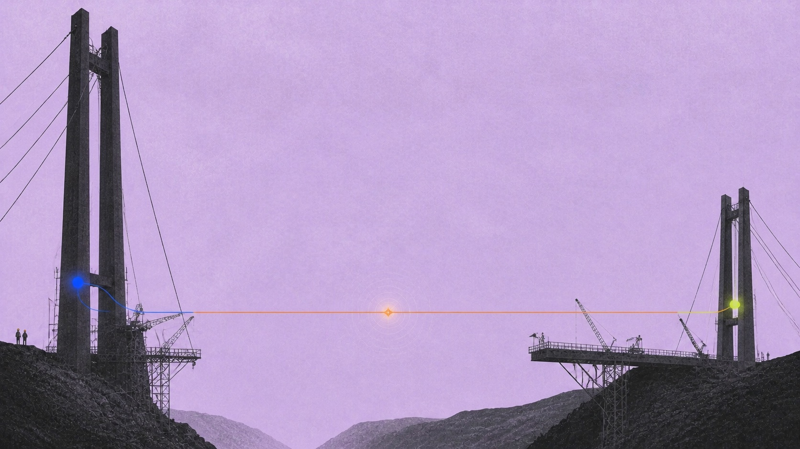

FIELD × GROUND × PATH × SIGNAL
01 / ATOM
FIELD × GROUND × PATH × SIGNAL
FIELD+GROUND+PATH+SIGNAL=KRAM
Aa
SPECTRAL / 400 · 500 · 600
#E5D5F1
#151419
#FF681F
#175FF1
#D7FF2F
02 / FORMATS
ONE ATOM. MANY FIELDS.


KRAM NOT MARKTHE MANIFEST
DESTINY OF SPACE

THINGS
WORTH
RETURNING TO

SIGNAL / 01MAKE THE
CONNECTION.

SEND
SOMETHING
STRANGE.
03 / RANGE
HUMAN. IDEAS. WORK.

FRIENDSHIP IS THE SALVE FOR SCROLLING.

WORDS ARE CODE.

MAKE THE CONNECTION.
04 / MAKE
BUILD A SIGNAL.
MARK MURDOCK
KRAM
05 / PACK